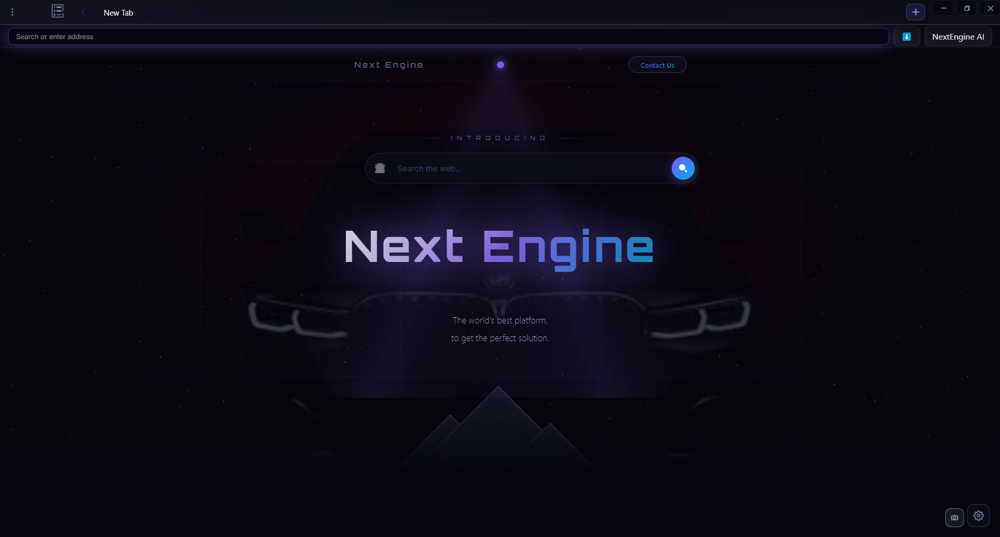

FIELD NOTE / 09.14.26The quiet power
The quiet power
of a focused mind
There is a different way to move through information. One that makes space for the signal and lets the static fall away.
ADVERTISEMENTRELATED STORIES
A NEW KIND OF BROWSER
The browser that thinks ahead.
Browse faster. Think deeper. Control everything.

02 / COMMAND INTELLIGENCE
NextEngine understands what you mean—not just what you type. A single address field becomes a command center for the entire web.
03 / YOUR WORKSPACE
Keep the signal. Lose the noise. Tabs, bookmarks, tasks, and history work together in a workspace that bends to your flow.
04 / CONTROL THE EXPERIENCE
Reader mode clears the edges. Focus mode clears the noise. Content blocking gives every page room to breathe.
There is a different way to move through information. One that makes space for the signal and lets the static fall away.
Third-party content stays out of the way—so the page can do its job.
04A / BROWSER SYSTEMS
Small controls. Big leverage. Every feature is designed to disappear into your flow until you need it.
TAB INTELLIGENCE

TABS
• Press + to create a new tab.
Hover over a tab and click the x button to delete it.
CUSTOM BANGS
DOWNLOADS
FOCUS MODE
PASSWORD AUTO-FILL
NETWORK CONTROL
04B / POWER USER LAYER
Shortcuts for speed. Userscripts for control. Autoplay and language settings exactly where you expect them.
05 / MAKE IT YOURS
Dark, light, night, or system. Configure the browser you want to spend time in.
What will you discover?
06 / NEXTENGINE AI
From searching to understanding. From understanding to action.
I'll connect the context, remove the noise, and surface the ideas that matter.
THE NEXT CHAPTER STARTS HERE
The web, reengineered around the way you think.